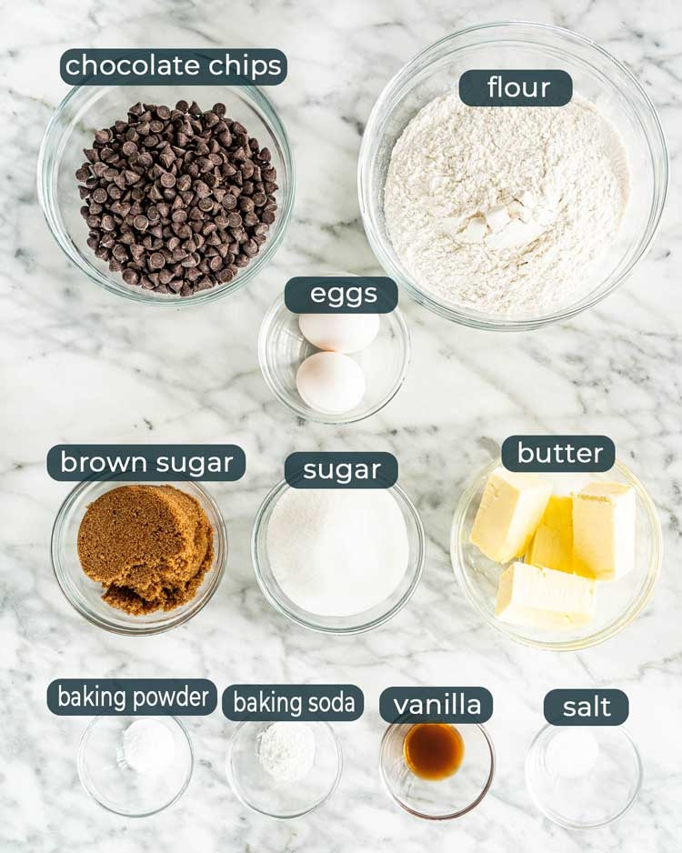
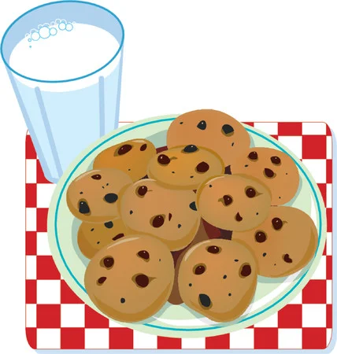
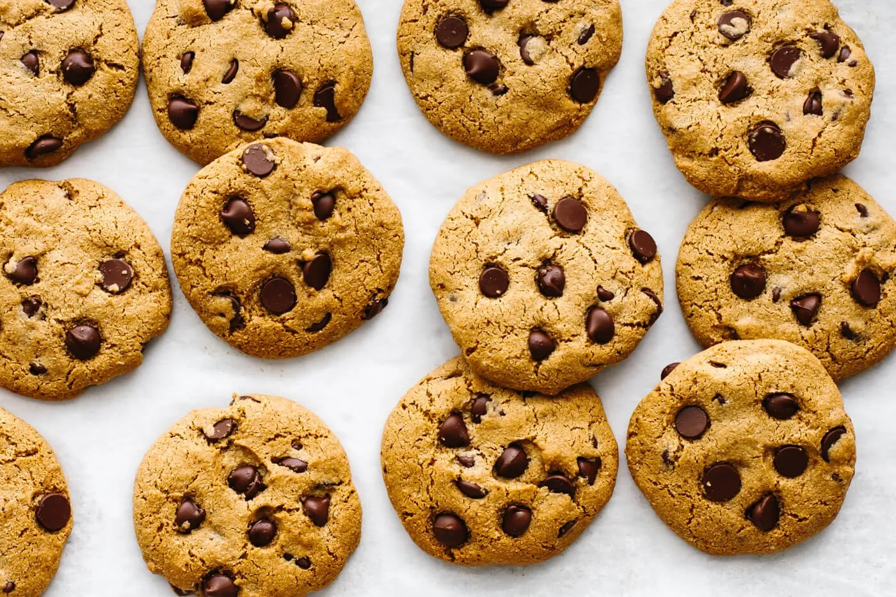
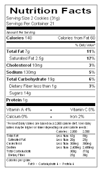

Ingredients and Directions for making wonderful and delicious chocolate chip cookies!
Quick Facts
- Prep Time: 20 mins
- Cook Time: 10 mins
- Total Time: 30 mins
- Servings: 48
- Yield: 4 dozen
Ingredients
| No. |
Ingredients |
Quantity |
| 01. |
Softened Butter |
1 cup |
| 02. |
White Sugar |
1 cup |
| 03. |
Packed Brown Sugar |
1 cup |
| 04. |
Eggs |
2 |
| 05. |
Vanilla Extract |
2 teaspoons |
| 06. |
Baking Soda |
1 teaspoon |
| 07. |
Hot water |
2 teaspoons |
| 08. |
Salt |
½ teaspoon |
| 09. |
All- Purpose Flour |
3 cups |
| 10. |
Semi-sweet Chocolate Chips |
1 cup |
| 11. |
Chopped Walnuts |
1 cup |
Directions/ Steps
- Preheat the oven to 350 degrees F (175 degrees C).
- Beat butter, white sugar, and brown sugar with an electric mixer in a large bowl until smooth. Beat in eggs, one at a time, then stir in vanilla. Dissolve baking soda in hot water. Add to batter along with salt. Stir in flour, chocolate chips, and walnuts.
- Drop spoonfuls of dough 2 inches apart onto ungreased baking sheets.
- Bake in the preheated oven until edges are nicely browned, about 10 minutes. Cool on the baking sheets briefly before removing to a wire rack to cool completely.
Nutrition Facts
% Daily Value *
---------------------------------------------------------------------
Total Fat: 8g 10%
---------------------------------------------------------------------
Saturated Fat: 4g 19%
---------------------------------------------------------------------
Cholesterol: 10mg 3%
---------------------------------------------------------------------
Sodium: 76mg 3%
---------------------------------------------------------------------
Total Carbohydrate: 19g 7%
---------------------------------------------------------------------
Dietary Fiber: 1g 3%
---------------------------------------------------------------------
Protein: 2g -
---------------------------------------------------------------------
Calcium: 11mg 1%
---------------------------------------------------------------------
Iron: 1mg 4%
---------------------------------------------------------------------
Potassium: 52mg 1%



